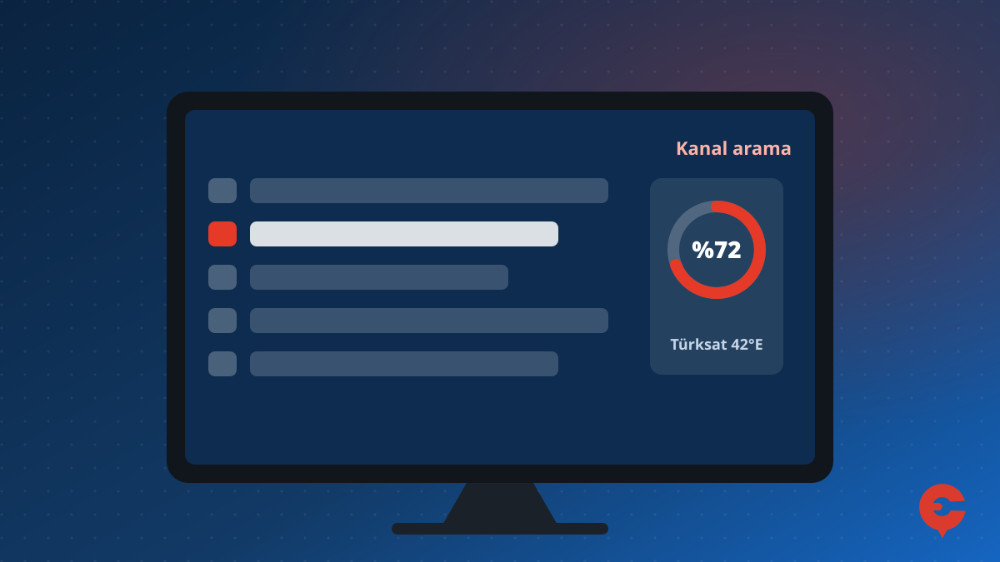
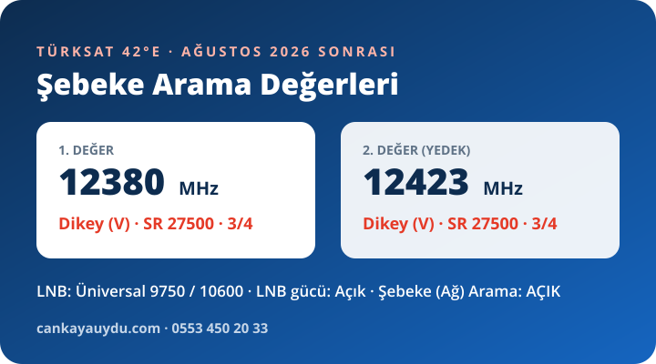

Hi-Level, Axen, Telefunken, Onvo ve Sunny gibi markaların televizyonlarında menüler modele göre çok değişir. Bu yüzden önce menü tipinizi belirleyin, sonra aşağıdaki adımları izleyin. Ağustos 2026 Türksat değişikliğinden sonra kanallar gittiyse bu adımlar listeyi yeniler.
1. Menü Tipinizi Belirleyin
- Ana ekranda Google TV / Android TV yazıyorsa: Ayarlar → Kanallar ve Girişler → Kanallar → Kanal Tarama → Uydu.
- Menü tuşuna basınca "Kurulum" bölümü çıkıyorsa: Menü → Kurulum → Otomatik Kanal Taraması → Uydu (TKGS varsa önce TKGS güncellemesini deneyin).
- "Ayarlar → Kanal Ayarları" yapısı varsa: Ayarlar → Kanal Ayarları → Uydu Ayarları → Kanal Arama / Otomatik Arama.
2. Marka Notları
Sunny
Sunny televizyonlarda yaygın yol Ayarlar → Kanal Ayarları → Uydu Ayarları → Kanal Arama / Otomatik Arama şeklindedir; Türksat seçilip arama başlatılır. TKGS destekleyen modellerde liste otomatik güncellenebilir.
Onvo
Onvo'nun Google TV / Android TV modellerinde uydu kurulumu Ayarlar → Kanallar ve Girişler → Kanallar altındadır. "Onvo TV uydu görmüyor" sorununda önce kablonun uydu (SAT) girişinde olduğunu ve LNB gücünün açık olduğunu kontrol edin.
Hi-Level
Hi-Level televizyonlarda kurulum menüsündeki otomatik kanal taramasından Uydu seçilir. "TKGS yok" görünen modellerde kanallar şebeke aramasıyla bulunur; sıralama elle yapılır.
Axen
Axen televizyonlarda kurulum veya kanal ayarları menüsünden uydu kurulumu yapılır. Uydu listesinde Türksat'ın adı "Türksat 42E" veya "Türksat 42.0E" olarak geçebilir.
Telefunken
Kendinden uydulu Telefunken modellerinde uydu kurulumu kanal ayarlarından yapılır. Merkezi sistemli binalarda LNB tipinin üniversal, DiSEqC'nin kapalı (tek uydu) olduğunu kontrol edin; ayrıntılar: merkezi uydu sisteminde TV kurulumu.
3. Şebeke Araması (Tüm Markalar)
- Kanal arama menüsünde Manuel (Elle) aramayı seçin ve tarama türünü Uydu yapın.
- Uydu olarak Türksat 42°E'yi seçin.
- Frekans, polarizasyon ve sembol oranını aşağıdaki tablodan girin.
- Şebeke (Ağ) Araması'nı açın ve aramayı başlatın.
| Frekans | Polarizasyon | Sembol oranı | FEC | Kapsama | |
|---|---|---|---|---|---|
| Ana değer | 12380 MHz | Dikey (V) | 27500 | 3/4 | Türkiye-Batı |
| Yedek 1 | 12423 MHz | Dikey (V) | 27500 | 3/4 | Türkiye-Batı |
| Yedek 2 | 12458 MHz | Dikey (V) | 30000 | 3/4 | Türkiye-Batı |
Uydu: Türksat 42°E, LNB: Üniversal 9750/10600 MHz, LNB gücü: Açık. Değerlerden biri yeterlidir; asıl önemli olan Şebeke Arama (Ağ Araması) seçeneğinin açık olmasıdır. Bu sayede tek frekanstan uydudaki bütün kanal listesi bulunur. Değerler Türksat'ın resmî ağ çözümleme frekansları listesinden alınmıştır; bazı kaynaklarda geçen 12423 MHz Yatay 30000 değeri Türkiye-Doğu kapsamasına aittir.

Bu markaların menü adları model ve yazılım sürümüne göre değişebilir; benzer isimli seçenekleri arayın.
Diğer Markalar
Sık Sorulan Sorular
Hi-Level TV'de uydu ayarlama nasıl yapılır?
Kurulum menüsündeki otomatik kanal taramasından Uydu seçilir. TKGS yoksa Türksat 42°E için 12380 MHz Dikey 27500 değeriyle şebeke araması yapılır.
Sunny TV'de uydu kurulumu nasıl yapılır?
Ayarlar → Kanal Ayarları → Uydu Ayarları → Kanal Arama / Otomatik Arama yolundan Türksat seçilip arama başlatılır.
Onvo TV uydu görmüyor, ne yapmalıyım?
Kablonun televizyonun uydu (SAT) girişinde olduğunu ve LNB gücünün açık olduğunu kontrol edin; ardından Kanallar menüsünden uydu taramasını tekrarlayın.
Kanallarınızı geri getiremediniz mi? Çankaya ve çevresinde yerinde kanal kurulumu, uydu ayarı ve arıza tespiti için arayın ya da WhatsApp'tan yazın.
0553 450 20 33 WhatsApp